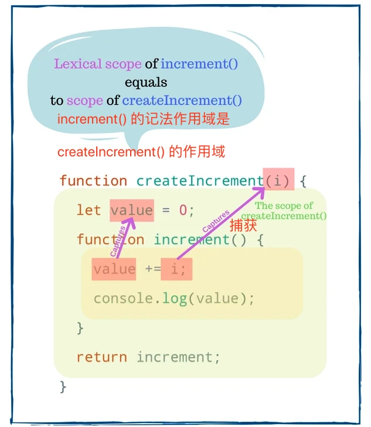

使用js和React Hook时的过时闭包问题及解决方案
发布时间：
本文字数：1,764 字 阅读完需：约 4 分钟
1. JS 中的闭包
下面定义了一个工厂函数 createIncrement(i)，它返回一个increment函数。之后，每次调用increment函数时，内部计数器的值都会增加i。
function createIncrement(i) {
let value = 0;
function increment() {
value += i;
console.log(value);
}
return increment;
}
const inc = createIncrement(1);
inc(); // 1
inc(); // 2
createIncrement(1) 返回一个增量函数，该函数赋值给inc变量。当调用inc()时，value 变量加1。
第一次调用inc()返回1，第二次调用返回2，依此类推。
这挺趣的，只要调用inc()还不带参数，JS 仍然知道当前 value 和 i 的增量，来看看这玩意是如何工作的。
原理就在 createIncrement() 中。当在函数上返回一个函数时，有会有闭包产生。闭包捕获词法作用域中的变量 value 和 i。
词法作用域是定义闭包的外部作用域。在本例中，increment() 的词法作用域是createIncrement()的作用域，其中包含变量 value 和 i。

无论在何处调用 inc()，甚至在 createIncrement() 的作用域之外，它都可以访问 value 和 i。
闭包是一个可以从其词法作用域记住和修改变量的函数，不管执行作用域是什么。
继续这个例子，可以在任何地方调用 inc()，甚至在异步回调中也可以:
(function() {
inc(); // 3
}());
setTimeout(function() {
inc(); // 4
}, 1000);
2. React Hooks 中的闭包
通过简化状态重用和副作用管理，Hooks 取代了基于类的组件。此外，咱们可以将重复的逻辑提取到自定义 Hook 中，以便在应用程序之间重用。
Hooks 严重依赖于 JS 闭包,但是闭包有时很棘手。
当咱们使用一个有多种副作用和状态管理的 React 组件时，可能会遇到的一个问题是过时的闭包，这可能很难解决。
咱们从提炼出过时的闭包开始。然后，看看过时的闭包如何影响 React Hook，以及如何解决这个问题。
3. 过时的闭包
工厂函数createIncrement(i)返回一个increment函数。increment 函数对 value 增加i请输入代码 ，并返回一个记录当前 value 的函数
function createIncrement(i) {
let value = 0;
function increment() {
value += i;
console.log(value);
const message = `Current value is ${value}`;
return function logValue() {
console.log(message);
};
}
return increment;
}
const inc = createIncrement(1);
const log = inc(); // 打印 1
inc(); // 打印 2
inc(); // 打印 3
// 无法正确工作
log(); // 打印 "Current value is 1"
在第一次调用inc()时，返回的闭包被分配给变量 log。对 inc() 的 3 次调用的增量 value 为 3。
最后，调用log() 打印 message “Current value is 1”，这是出乎意料的，因为此时 value 等于 3。
log()是过时的闭包。在第一次调用 inc() 时，闭包 log() 捕获了具有 “Current value is 1” 的 message 变量。而现在，当 value 已经是 3 时，message 变量已经过时了。
过时的闭包捕获具有过时值的变量。
4.修复过时闭包的问题
使用新的闭包
解决过时闭包的第一种方法是找到捕获最新变量的闭包。
咱们找到捕获了最新 message 变量的闭包。就是从最后一次调用 inc() 返回的闭包。
const inc = createIncrement(1);
inc(); // 打印 1
inc(); // 打印 2
const latestLog = inc(); // 打印 3
// 正常工作
latestLog(); // 打印 "Current value is 3"
latestLog 捕获的 message 变量具有最新的的值 “Current value is 3”。
顺便说一下，这大概就是 React Hook 处理闭包新鲜度的方式。
Hooks 实现假设在组件重新渲染之间，作为 Hook 回调提供的最新闭包(例如 useEffect(callback)) 已经从组件的函数作用域捕获了最新的变量。
关闭已更改的变量
第二种方法是让logValue()直接使用 value。
让我们移动行 const message = ...; 到 logValue() 函数体中：
function createIncrementFixed(i) {
let value = 0;
function increment() {
value += i;
console.log(value);
return function logValue() {
const message = `Current value is ${value}`;
console.log(message);
};
}
return increment;
}
const inc = createIncrementFixed(1);
const log = inc(); // 打印 1
inc(); // 打印 2
inc(); // 打印 3
// 正常工作
log(); // 打印 "Current value is 3"
logValue() 关闭 createIncrementFixed() 作用域内的 value 变量。log() 现在打印正确的消息“Current value is 3”。
5. Hook 中过时的闭包
useEffect()
现在来研究一下在使用 useEffect() Hook 时出现过时闭包的常见情况。
在组件 <WatchCount> 中，useEffect()每秒打印 count 的值。
function WatchCount() {
const [count, setCount] = useState(0);
useEffect(function() {
setInterval(function log() {
console.log(`Count is: ${count}`);
}, 2000);
}, []);
return (
<div>
{count}
<button onClick={() => setCount(count + 1) }>
加1
</button>
</div>
);
}
打开 CodeSandbox 并单击几次加1按钮。然后看看控制台，每2秒打印 Count is: 0。
咋这样呢？
在第一次渲染时，log() 中闭包捕获 count 变量的值 0。过后，即使 count 增加，log()中使用的仍然是初始化的值 0。log() 中的闭包是一个过时的闭包。
解决方案是让 useEffect()知道 log() 中的闭包依赖于count：
function WatchCount() {
const [count, setCount] = useState(0);
useEffect(function() {
const id = setInterval(function log() {
console.log(`Count is: ${count}`);
}, 2000);
return function() {
clearInterval(id);
}
}, [count]); // 看这里，这行是重点
return (
<div>
{count}
<button onClick={() => setCount(count + 1) }>
Increase
</button>
</div>
);
}
适当地设置依赖项后，一旦 count 更改，useEffect() 就更新闭包。
同样打开修复的 codesandbox，单击几次加1按钮。然后看看控制台，这次打印就是正确的值了。
正确管理 Hook 依赖关系是解决过时闭包问题的关键。推荐安装 eslint-plugin-react-hooks,它可以帮助咱们检测被遗忘的依赖项。
useState()
组件<DelayedCount>有 2 个按钮：
- 点击按键 “Increase async” 在异步模式下以
1秒的延迟递增计数器
在同步模式下，点击按键 “Increase sync” 会立即增加计数器。
function DelayedCount() {
const [count, setCount] = useState(0);
function handleClickAsync() {
setTimeout(function delay() { setCount(count + 1); }, 1000);
}
function handleClickSync() {
setCount(count + 1);
}
return (
<div> {count} <button onClick={handleClickAsync}>Increase async</button> <button onClick={handleClickSync}>Increase sync</button> </div>
);
}
现在打开 codesandbox 演示。点击 “Increase async” 按键然后立即点击 “Increase sync” 按钮，count 只更新到 1。
这是因为 delay() 是一个过时的闭包。
来看看这个过程发生了什么：
- 初始渲染：
count值为0。 - 点击 'Increase async' 按钮。
delay()闭包捕获count的值0。setTimeout()1 秒后调用delay()。 - 点击 “Increase async” 按键。
handleClickSync()调用setCount(0 + 1)将count的值设置为1，组件重新渲染。 1秒之后，setTimeout()执行delay()函数。但是delay()中闭包保存count的值是初始渲染的值0，所以调用setState(0 + 1)，结果count保持为1。
delay() 是一个过时的闭包，它使用在初始渲染期间捕获的过时的 count 变量。
为了解决这个问题，可以使用函数方法来更新 count 状态：
function DelayedCount() {
const [count, setCount] = useState(0);
function handleClickAsync() {
setTimeout(function delay() {
setCount(count => count + 1); // 这行是重点
}, 1000);
}
function handleClickSync() {
setCount(count + 1);
}
return (
<div>
{count}
<button onClick={handleClickAsync}>Increase async</button>
<button onClick={handleClickSync}>Increase sync</button>
</div>
);
}
现在 setCount(count => count + 1) 更新了 delay() 中的 count 状态。React 确保将最新状态值作为参数提供给更新状态函数，过时的闭包的问题就解决了。
总结
闭包是一个函数，它从定义变量的地方(或其词法范围)捕获变量。闭包是每个 JS 开发人员都应该知道的一个重要概念。
当闭包捕获过时的变量时，就会出现过时闭包的问题。解决过时闭包的一个有效方法是正确设置 React Hook 的依赖项。或者，对于过时的状态，使用函数方式更新状态。
你认为闭包使得 React Hook 很难理解吗？
来源
作者：Dmitri Pavlutin
译者：前端小智
来源：dmitripavlutin
原文： https://cloud.tencent.com/developer/tools/blog-entry?target=https%3A%2F%2Fdmitripavlutin.com%2Fsimple-explanation-of-javascript-closures%2F